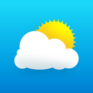

Cargando…
Próximas 24 horas
Próximos 7 días
Usar como API
Estas direcciones devuelven el clima en formato JSON y se actualizan cada hora. Podés usarlas desde otras apps con fetch().
Datos: Open-Meteo.com

¿Qué tal el clima?Cargando…
Estas direcciones devuelven el clima en formato JSON y se actualizan cada hora. Podés usarlas desde otras apps con fetch().
Datos: Open-Meteo.com